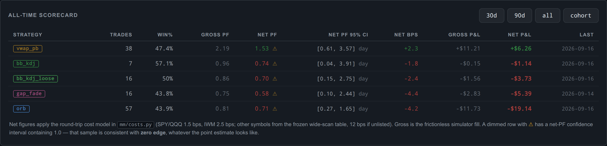
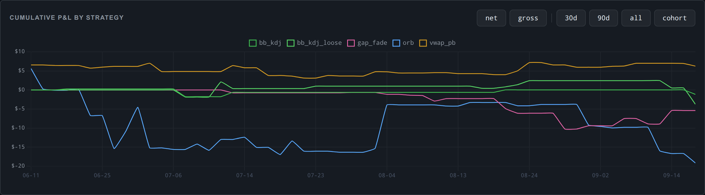

Paper-only · Moomoo OpenD · 5-minute bars
The profit was inside the cost of trading.
moomoo-trader runs five intraday strategies against a simulated brokerage account, and a research pipeline built to find out whether any of them earn more than it costs to trade them.
So far, none has shown that. This page is about how the project found out, and what it now does so a result like that can't hide again.
Live figures as of the 2026-09-16 health review, net of the project's cost model. Positions are one to three shares; the dollar amounts are small on purpose.
The finding
For its first 102 live trades the dashboard showed a modest profit. Then every trade was re-priced with a transaction-cost model: 1.5 basis points per round trip for SPY and QQQ, 2.5 for IWM, which is the range the project had already written down for itself.
- profit factor
- 1.19
- 95% CI
- 0.66 – 2.17
- P(mean > 0)
- 0.72
- profit factor
- 0.99
- 95% CI
- 0.55 – 1.78
- P(mean > 0)
- 0.48
The apparent profit disappeared under the modeled costs. The measured edge had been about +1.3 bps per trade, inside a 1–3 bps cost band. Nothing in the reports said so, because nothing in them charged for trading.
Everything was rebuilt around that. There is one trade-pairing module and one cost model, and every report, gate, and backtest shows gross and net side by side. The 32 trades logged since then were worse: net PF 0.32.

What's actually verified
| Area | State | |
|---|---|---|
| VERIFIED | Paper runner | Five strategies on SPY, QQQ, and IWM, running on a VPS since June, with confirmed fills and broker reconciliation. |
| VERIFIED | Engines agree | The fast backtest engines reproduce the real runner exactly on five months of data. The first, preregistered attempt failed; the causes were found and fixed. |
| VERIFIED | Data integrity | Price archives are rebased rather than spliced when dividends change history, and tests can no longer write into research data. |
| UNPROVEN | LLM regime gate | Claude classifies each morning's regime and blocks two mean-reversion lanes on trending days. It is live, but its value has not been compared against a no-gate baseline. |
| IN PROGRESS | 85-symbol scan | Frozen universe, costs, parameters, and selection rule, with a sealed 2019–2021 holdout. |
| NONE | A profitable strategy | Not demonstrated. |
| NEVER | Real money | No live-order path exists, and none will be added. |
How the research is kept honest
The failure this is built against is retuning quietly until a backtest looks good. Each rule below exists because the project needed it.
Gates before data
Every strategy has sample-size gates and pre-decided actions. Changing a gate means writing a dated amendment.
Net is the ruler
Every profit-factor threshold means net PF, under a frozen cost model that is deliberately not a tunable knob.
Day-blocked uncertainty
Same-day trades across symbols are not independent, so intervals resample whole trading days.
Two engines must agree
The fast engine is trusted only after matching the real runner within a tolerance fixed in advance.
A sealed holdout
2019–2021 was never touched by any research. The scan refuses to compute it until the finalist list is committed.
A frozen forward cohort
Past data has all been looked at. From 2026-09-17 the live settings are frozen, and only new trades count.
What the machinery caught
Each of these was found by the project's own checks and is recorded, with data, in the graveyard.
The live dashboard
